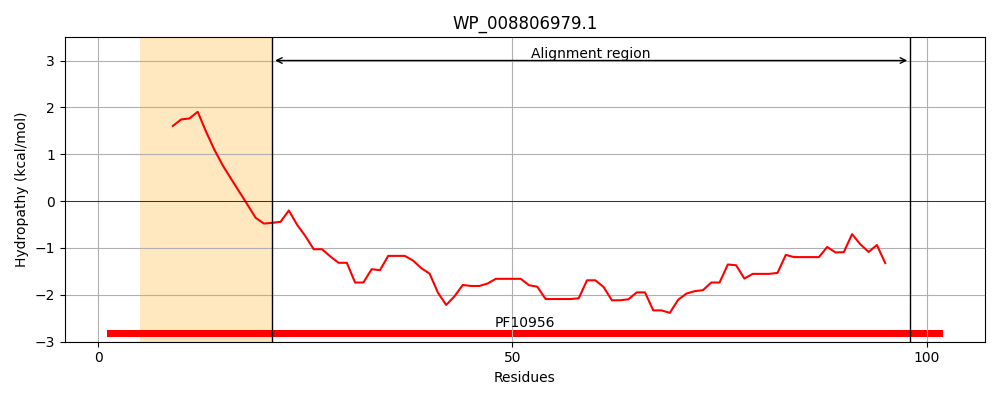
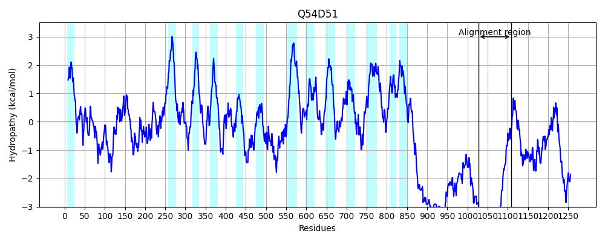
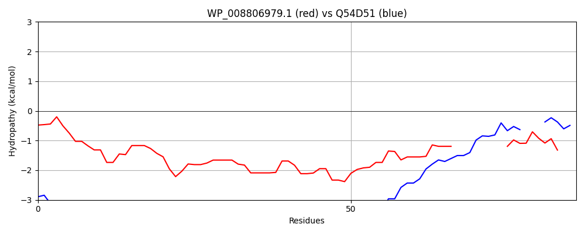

Hit Accession: Q54D51
Hit TCID: 1.A.17.5.14
Hit Description: gnl|BL_ORD_ID|14030 gnl|TC-DB|Q54D51|1.A.17.5.14 Uncharacterized protein OS=Dictyostelium discoideum GN=DDB0184423 PE=4 SV=1
Mach Len: 86
e:0.000000
Query TMS Count : 1
Hit TMS Count: 13
TMS-Overlap Score: 0.000000
Predicted Substrates:None
BLAST Alignment:
| Protein Hydropathy Plots: | |
|---|---|
|  |  |
Pairwise Alignment-Hydropathy Plot: | |
|  | |